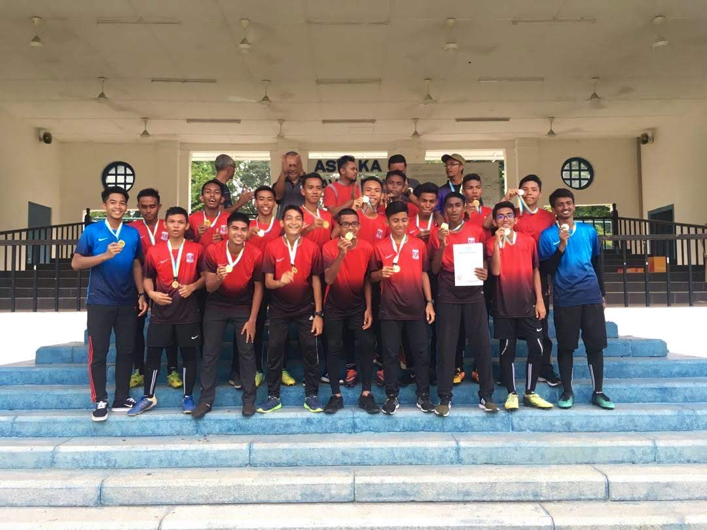
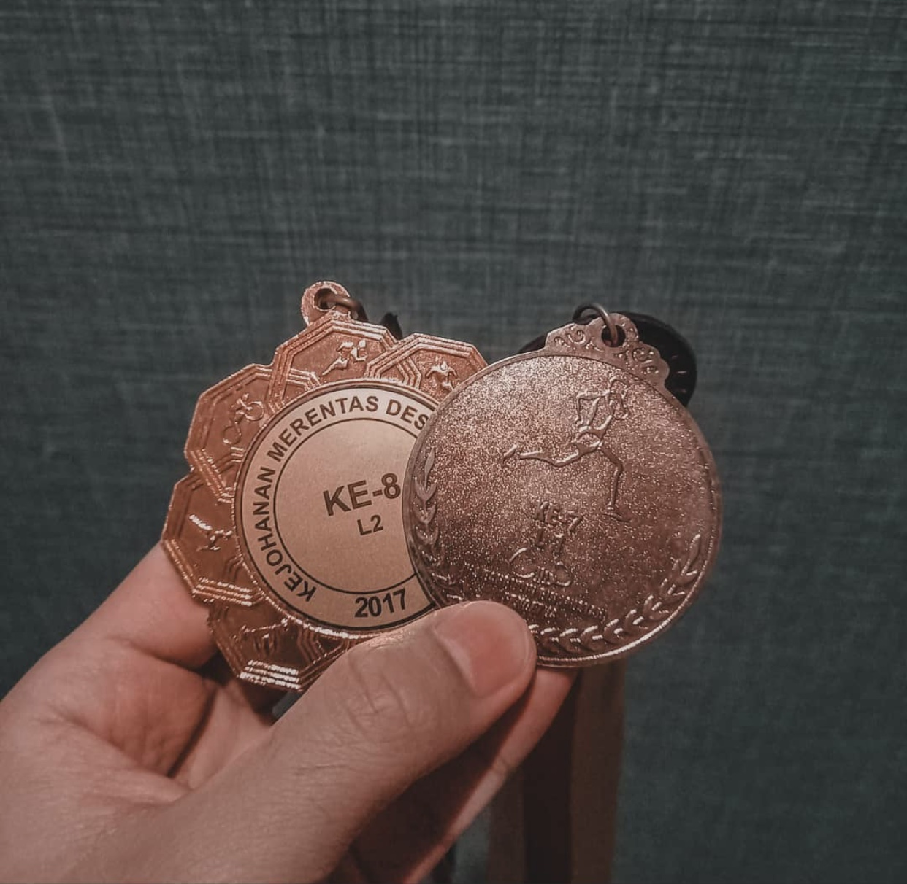
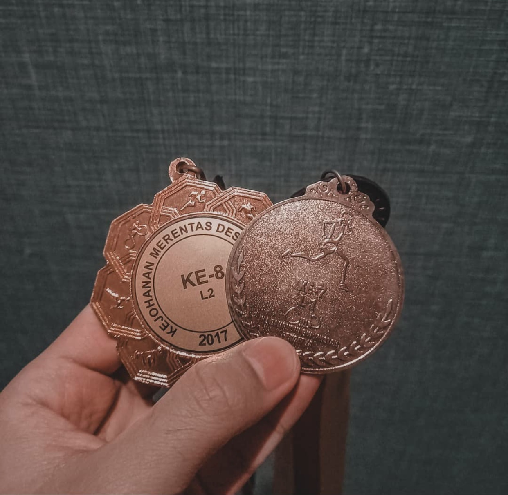

ZAIM'S PERSONAL WEBSITE
Home Page |
Biodata |
Experience |
Education |
Family |
Gallery |
Movie |
|---|
Hello! Right here i'll tell you about my experience in sports journey.
I still remember the first time I won my first running competition at school. I have managed to get eight place in this run. I felt very happy that time because in the year before that I had never won.
I kind of can't believe i finally managed to win it. With the support that my family and friends have given me as well, I feel more motivated to run faster in the future.
So the next year too, before I moved school I managed to win the same running competition but this time I was able to get a higher ranking which is seventh place.
I was so happy when my name was called to take the medal on stage to a loud cheer by a friend of mine.
After I moved school, I was also still active in running and other sports such as football and basketball. I showed high interest by always playing with my friends every evening, practicing running together with my friends, and even winning medals for my sports house on sports day.
I managed to contribute some medals like the 800 meter champion run, second place 4x400 meters.
After all the effort I have given, like a dream I finally managed to represent my school for football events and runs like the 3000 meters and 4x400 meters.
In a football competition that I have represented my school, I managed to help my school to become a champion in the zonal level.
We are a team also our teachers are very happy because for a long time our school has not been a champion for this zone level.
After that in a few weeks, it was my running day to represent the school in the 3000 meter and 4x400 meter running events.
In the day of the run, I felt very nervous to run because this was the first time I ran to represent my school and in the stadium were also other students from different schools.
But at the end of my run time came, once again I managed to win the 3000 meter run event by getting second place.
After the run, I was only able to be grateful and kept smiling because I was so happy.
I also thank my teacher for trusting me in allowing me to participate in this event and I also thank my family and friends for supporting me over the years.
 
